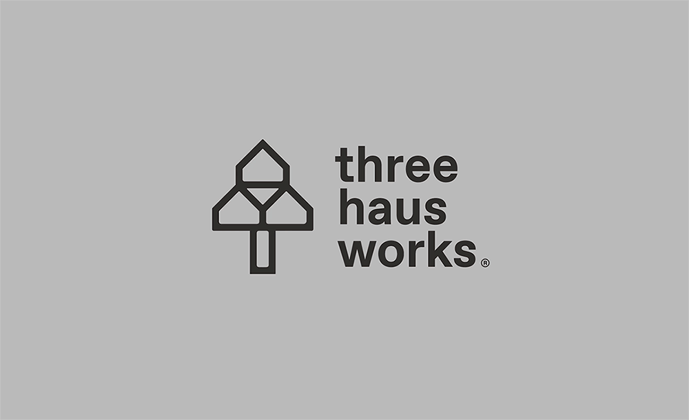

2019
Three Haus Works Branding Proposal
A brand identity created for a Singapore-based interior design firm in the making. The logo is more than an architecture of visual elements, it symbolizes the unity of its three co-founders, the houses they furbish into homes, and the stability their services provide. Its brand colors are influenced by materials such as concrete and wood.